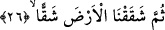
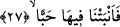
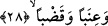

kelimesinden maksad, insanların muhtaç oldukları yağmurdur. Bu ifâde yukardaki
“ta’âmihî/yediğine” kelimesinden bedeldir. Bu, iki kelime arasındaki münasebetten
dolayı bedeldir. Çünkü su, yiyecek maddelerinin meydana gelmesine sebebtir. Bir başka
ifâdeyle su, yiyecek maddelerini de içerisine almaktadır. Zira mübdelun minh yâni
yiyecek maddesinin, bedeli yâni suyu ihtiva etmesi gerekmez. Bu durumda iki cümleyi
birbirine bağlayan âid zamiri mahzuftur. O zamirin takdiriyle cümle tam olarak şöyle
ifâde edilir: “Ennâ sabebnâ lehu’l-mâe/Suyu o insan için nasıl bol bol boşalttık” yâni
yağmuru bulutlardan nasıl bol bol boşalttık!
26. Sonra toprağı göz göz yardık
“Sonra toprağı” bitkilerle “nasıl göz göz” eşsiz güzellikte, büyüklük, küçüklük,
şekil ve sûret bakımından toprağı yaran bitkilere yakışır şekilde “yardık.” Toprağın göz
göz yarılması, yağmurun bulutlardan boşaltılmasından sonra olduğu için Allah âyette
“sonra” anlamına gelen “sümme” kelimesini kullanmıştır.
27. Oradan ekinler,
“Oradan” yâni bitkilerle yarılan topraktan “ekinler” çıkardık. Burada “ekinler”
şeklinde tercüme edilen kelimenin aslı “tane” anlamındaki “habben” kelimesidir.
Yeryüzünün bitkilerle yarılması, günden güne artarak ve genişleyerek devam eder.
Sonunda tanenin gelişmesi tamam olur da başak uçlarında taneler oluşur. Âyetteki
“habb” buğday ve arpa gibi hasad edilen her şeyin adıdır. Bundan dolayı biz onu “ekin”
şeklinde tercüme ettik. Yine “habb”, aynı zamanda hurma tanesi gibi tane cinsinin de
adıdır. Dolayısıyla bu az olsun, çok olsun bütün taneleri içine alır. Âyette Allah’ın önce
tahıl cinsine yer vermesi, bunların insanın gıdasında temel unsurlar olmalarından
dolayıdır.
28. Üzüm bağları, sebzeler,
“Üzüm bağları” çıkardık. “Üzüm bağları” şeklinde tercüme edilen kelimenin
arapçası “ineben” kelimesidir. Bu kelime, bir önceki “habben” kelimesi üzerine